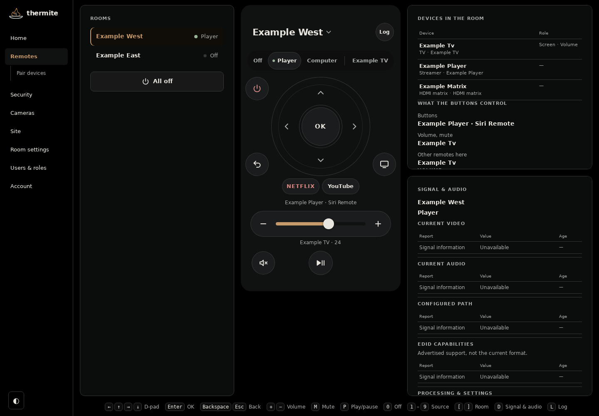
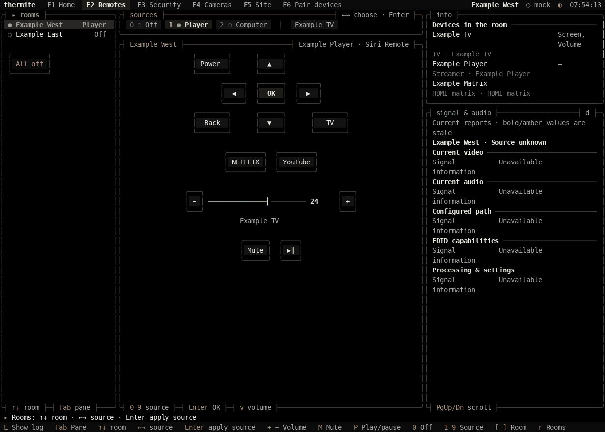

thermite
Home automation you can own.
Describe your rooms, devices and connections in one file. thermite builds your openHAB configuration and gives you everyday controls in a web app and a terminal.
One house file
Keep rooms, devices and their connections together. thermite generates the runtime configuration.
Checked deployments
Validate the configuration, check openHAB startup, and keep earlier deployments available for rollback.
A remote on every screen
Choose sources and control devices from your phone, desktop browser or terminal.
Yours, on your network
Core integrations communicate locally. Your real inventory and configuration stay in your private site.
See it


Both images show demo mode with fictional inventory, captured from the actual clients.
Run it your way
Already have a Linux server? Follow the server installation. Setting aside a machine for thermite? Build a bootable image with the standalone ISO guide. Both paths use a private site for your inventory and configuration.
How it works
- Describe the rooms, devices and connections in your house file.
- Generate openHAB's configuration and the remotes.
- Check the inventory and generated files, then verify that openHAB loads them.
- Deploy the checked configuration to your server.
- Use the remotes to choose rooms, switch sources and control devices.
What it controls
Supported integrations cover TVs, streaming boxes, AV receivers, projectors, speakers, and HDMI and USB switchers. Each device needs a compatible control interface; the commands guide includes discovery and pairing tools.
Why the name
The name draws on aluminothermic metalworking and the craft of joining useful parts. The bowl mark brings together pewter, copper and a little heat. Meet the bowl and its colors.